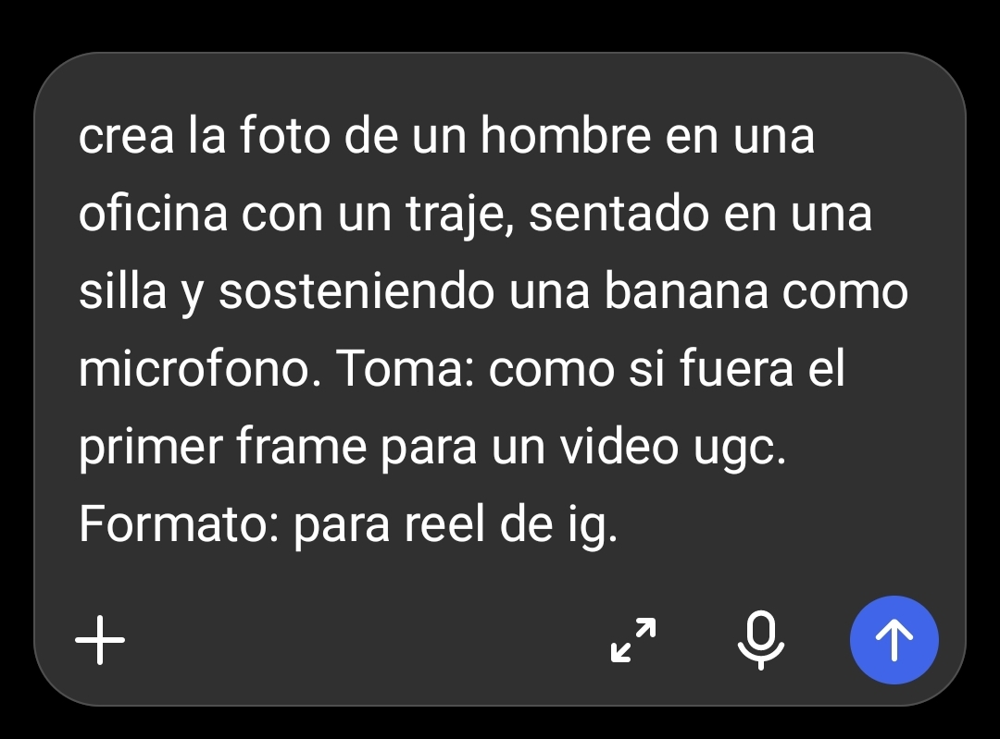
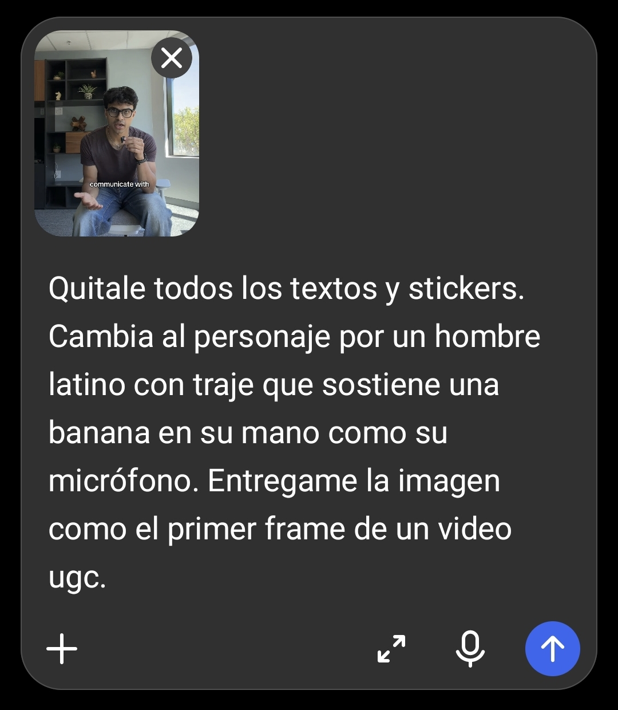
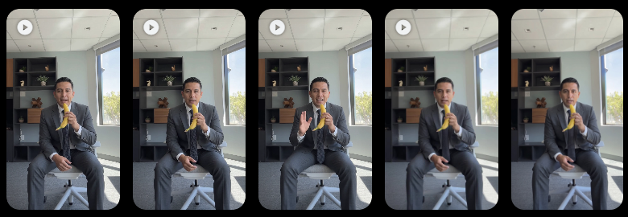
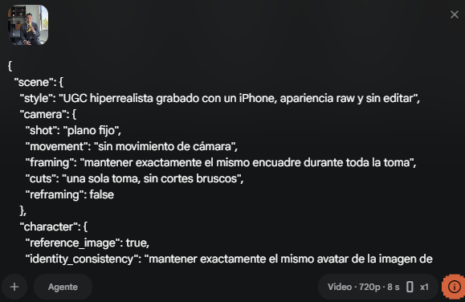

Si tus videos con IA
se ven
FALSOS
es porque los creas así…

FORMA INCORRECTA
PASO 1
Le pides a ChatGPT una imagen desde cero
PASO 2
La conviertes en video

HECHA 100% CON IA
Ese es el problema
la IA inventa todo desde cero
PARECE IA
FORMA CORRECTA
Si quieres hiperrealismo
FORMA CORRECTA
PASO 1
Busca un video real de referencia
FÍJATE EN
ángulo · luz · postura · objetos
PASO 2
Haz captura de ese momento

VIDEO DE REFERENCIA
ÁNGULO
LUZ
POSTURA
OBJETOS
PASO 3
Usa ChatGPT
PASO 3
Solo cambia al personaje
MISMA ESCENA
otro personaje

ANTES
DESPUÉS
PASO 4
PASO 4
Sube la imagen a Google Flow
ANÍMALA CON UN
prompt JSON estructurado

TUS CLIPS EN GOOGLE FLOW

ESTRUCTURADO
Así hice
ESTE VIDEO
Comenta
PROMPT
y te envío el prompt que uso
PROMPT JSON · FLOW
El que uso para generar estos videos
{
"scene": { "style": "UGC hiperrealista…",
"camera": { … }, "character": { … },
"performance": { … }, "dialogue": { … } }
}